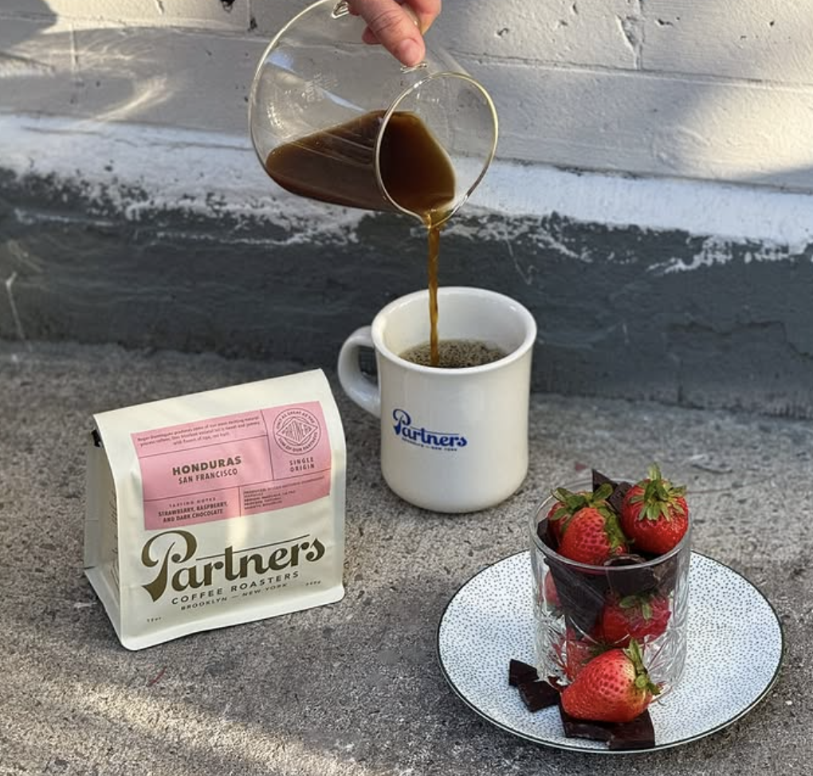
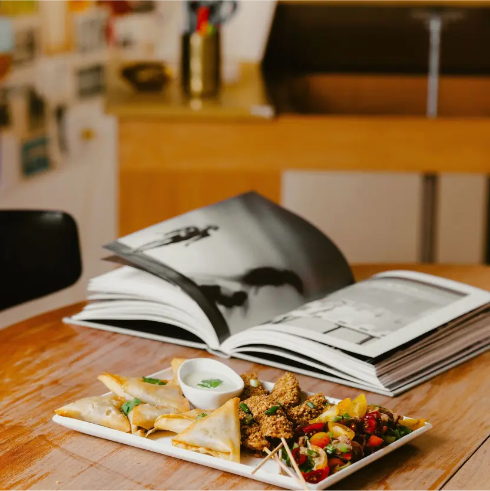
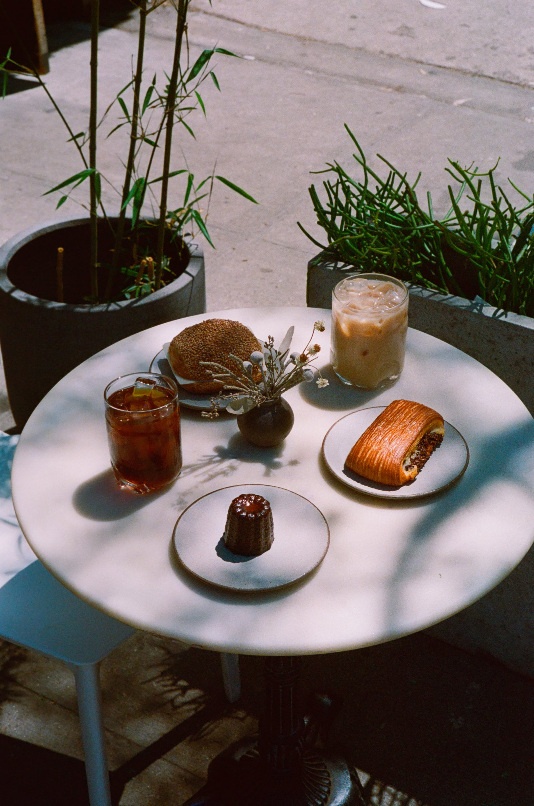
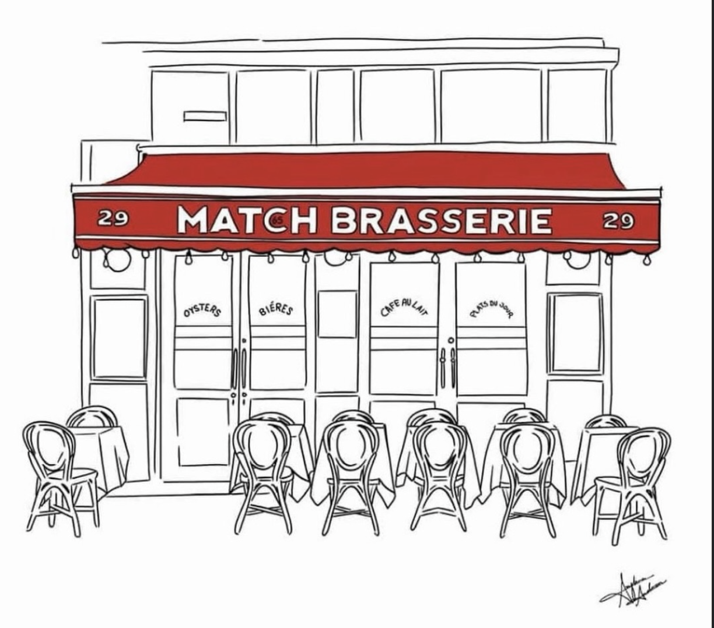
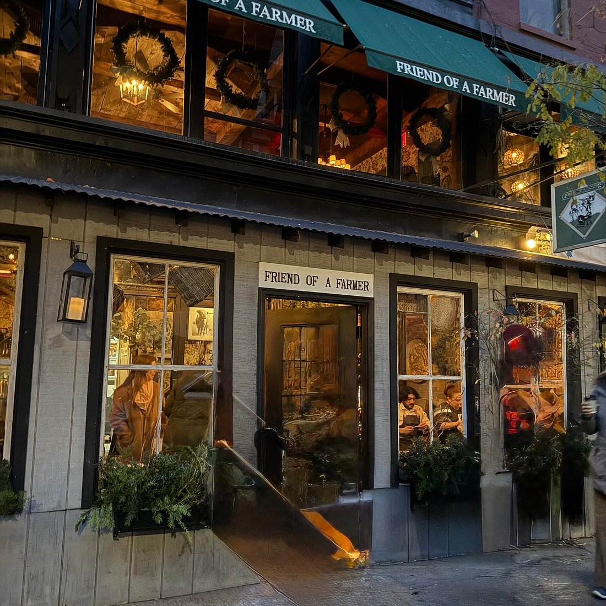
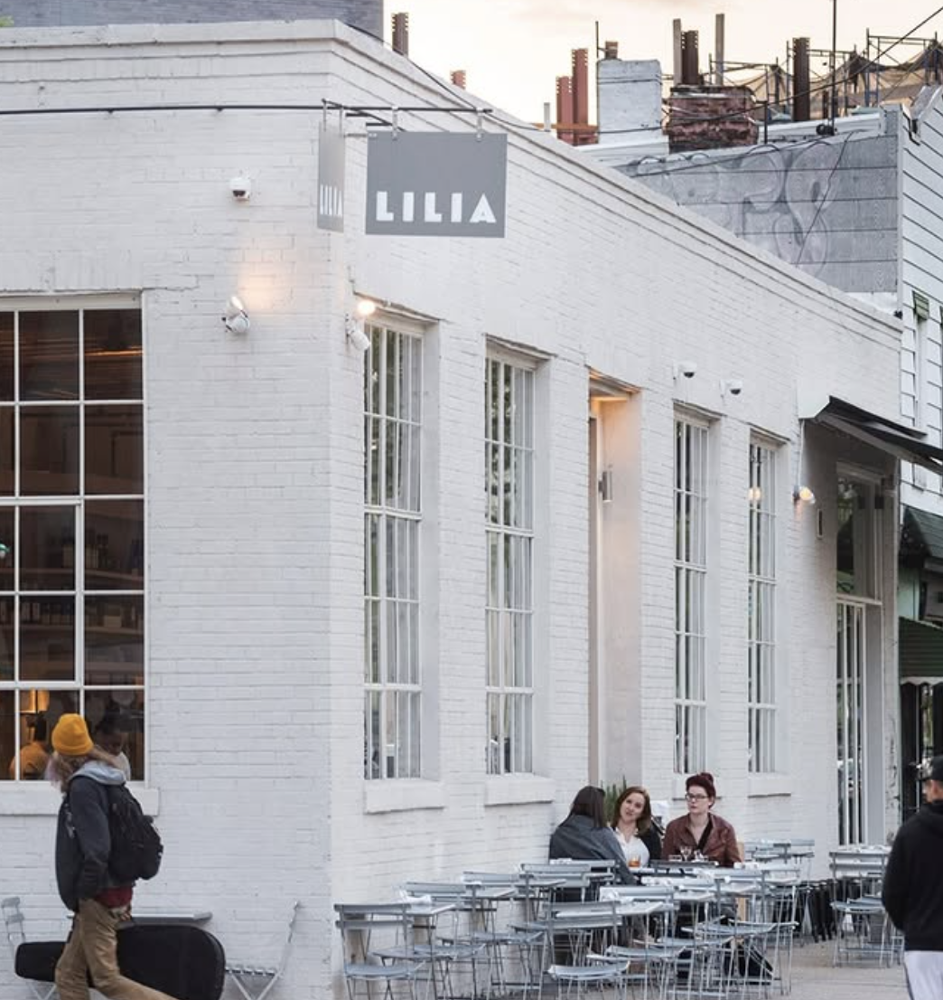

Cities / New York
Everyone says it, and it's true. You can find anything you can think of in New York. From street food to fine dining, NYC has any and everything in between. Here are some of my favorites.
Cafés
Partners Coffee
Long Island City
26-25 Jackson Ave
Parterns has a few locations across the city,this is just the one closest to me, and I love it. It has a back patio that opens when the weather gets nice, and you can work on your computer under the umbrellas. Their coffee is just infallible. I love buying my grounds from here and trying all their different varieties. Plus I love how conscious they are about their beans and where they come from, they're always showcasing the people working on the coffee sites, promoting honesty that I value a lot.

Atelier Jolie
NoHo
57 Great Jones St
Atelier Jolie’s café, run by Eat Offbeat, feels really calm and lowkey, but with a lot going on behind it. It’s not just a coffee spot, it’s a mix of different cultures and stories coming together through food. The menu pulls from homemade recipes from places like Syria, Sri Lanka, Morocco, and Venezuela, so everything feels personal and a little unexpected, not your usual café lineup. Plus there's an art gallery and tons of books if you want to get inspired.

La Cabra
SoHo
284 Lafayette St, New York, NY 10012
La Cabra is kind of a classic at this point, and it’s hyped for a reason. The space is super minimal and calm, really clean lines, lots of light, everything feels intentional without trying too hard. The coffee is great, but honestly the matcha and the cardamom bun are so good.

Restaurants
Match 65 Brasserie
Upper East Side
29 E 65th St, New York, NY 10065
This is a NYC classic for me and my family. Cozy interiors that still feel luxe, one of the best french foods in the city, and easy to get a rec! No gatekeeping here. This is a true neighborhood gem.

Friend of a Farmer
Upper West Side
68 W 71st St, New York, NY 10023
Every time I'm craving cozy food, especially in the winter, I think of Friend of a Farmer. Fresh ingredients, classic american cuisine. It feels like stepping away from the chaos of a city like NY and stepping into a local countryside restaurant.

Lilia
Brooklyn
567 Union Ave, Brooklyn, NY 11211
Not going to lie... it was a little difficult to get a reservation here, nothing crazy, but it's not a place you would impromptu go with a group of 5 on a friday night. That said, when I went, we did do a walk in at the bar and had the best fresh pasta and appetizers. Italian is always good, but excellent italian is hard to find.
